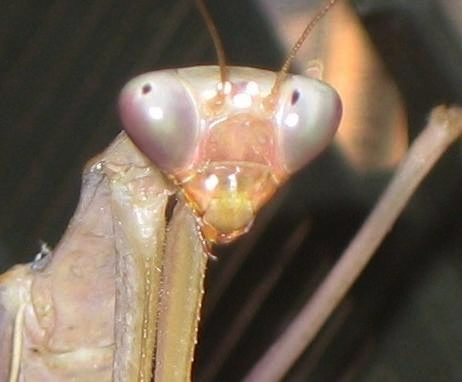

मंटिसGiant Asian Mantis
Hierodula membranacea · Mantidae · INS-0006

- Scientific name
- Hierodula membranacea Burmeister, 1838
- Family
- Mantidae
- Hindi
- मंटिस / बद्धहस्त कीट / भिड़ड़
- Status here
- native
- IUCN
- not evaluated
When to look कब देखें
Present all year.
Giant Asian Mantis / Membranous Mantis
Hierodula membranacea Burmeister, 1838 — Mantidae
मंटिस — पूर्वी यूपी के कीटों में सबसे कुशल शिकारी है। यह घंटों बिना हिले बैठ सकता है, आजमाइशी हमला इंसानी आँख से तेज़ करता है, और 180° मुड़कर आपको देख सकता है। यह टिड्डों, तितलियों, और छोटे मेंढकों का शिकार करता है।
Quick Identification शीघ्र पहचान
| Feature | Description |
|---|---|
| Size | Large mantis; body length ranges from 60–90 mm, with females being significantly larger than males |
| Colour | Bright uniform green overall, providing excellent leaf-mimicry camouflage |
| Head | Distinctly triangular, with large bulging compound eyes, capable of rotating up to 270° |
| Forelegs | Large, powerful raptorial front legs lined with sharp spines, held folded in front ("praying" posture) |
| Wings | Adults are fully winged; the bases of the hindwings are tinted pink-red (visible during threat displays) |
Field tip: Look for a large, bright green insect standing perfectly still on a shrub or leaf, holding its spined front legs folded together. If you approach, it will turn its triangular head directly to watch you.
Morphology आकृति विज्ञान
| Measurement | Range |
|---|---|
| Body length (adult) | 60–90 mm |
| Wingspan | 80–120 mm |
| Forewing length | 35–55 mm |
Size: Males 55–70 mm; females 70–90 mm. Wing span up to 120 mm in adult females.
Head: Triangular, flattened. Two large compound eyes (each with a false pupil — the dark spot that appears to follow your gaze). Three simple eyes (ocelli) between the compound eyes. Filiform antennae. Mandibles strong, for biting and dismembering prey.
Prothorax: Elongated, narrow — the "neck" that gives the mantis its characteristic profile and allows the head to turn. Pronotum (dorsal shield) ridged along the midline.
Forelegs (raptorial): Femur (thigh) and tibia (lower leg) both armed with interlocking sharp spines. When the leg snaps shut, the spine rows interlace like a trap. The strike movement closes in under 70 ms.
Wings: Tegmina (forewings) narrow, uniform green. Hindwings broad, membranous; base often pink-red — visible in the "deimatic display" (threat display — wings spread wide to startle a predator).
Abdomen: Robust in females (carries large egg mass). Slightly curved at tip.
Hunting Behaviour शिकार व्यवहार
Sit-and-wait strategy: Mantis does not chase prey. It selects a perch on vegetation that provides visual contrast (green mantis on green stem = invisible) and remains motionless for minutes to hours.
Detection: The large compound eyes provide excellent binocular vision in the forward arc. As an insect or small vertebrate approaches, the mantis slowly turns its head (body still!) to track it. The two false pupils merge in the visual field to provide 3D depth perception — calculating exactly when prey is within strike distance.
The strike: When prey comes within range (~3–5 cm), the raptorial forelegs unfold and snap shut in under 70 ms — faster than most prey can initiate a flight reflex. The trapped prey is immediately bitten at the back of the head, severing the ganglia and immobilizing it. Mantis then feeds at leisure.
Prey range: In eastern UP:
- Insects: grasshoppers, flies, moths, dragonflies, butterflies, beetles, small bees
- Small vertebrates: small frogs and lizards (large females only), hummingbird-sized birds (very rarely)
Cannibalism: Females occasionally eat males during or after mating — a well-documented but not universal behaviour. The female's nutritional benefit from consuming the male may increase egg production.
Ecological Role पारिस्थितिक भूमिका
Apex invertebrate predator: The mantis occupies the top of the invertebrate food chain in its habitat. It is the predator's predator — it eats what eats plants.
Prey for vertebrates: Despite being a top invertebrate predator, mantids are eaten by:
- Bats (echolocate them on vegetation at night; a significant predation pressure)
- Indian Roller and Black Drongo (catch them in flight or off vegetation)
- Frogs — Common Toad and Indian Bull Frog eat small mantis nymphs
- Garden Lizard — preys on mantis on tree trunks and wall surfaces
Pest control value: Mantis is a beneficial insect for gardens and farms — it eats grasshoppers, caterpillars, and flies without any chemical. Traditional farmers in eastern UP recognize the mantis as a sign of a "healthy" garden. Selling live mantids as a biological pest control is a growing industry in urban India.
Population indicator: Mantis requires a diverse invertebrate community to sustain itself. A garden with plenty of mantids has plenty of insects — which means plenty of flowers and plant diversity.
Life Cycle / Phenology जीवन चक्र
- Eggs: Laid in an ootheca — a foam egg case, 3–4 cm, hardening to a papery mass; attached to a plant stem or wall; contains 50–200 eggs
- Hatching: Nymphs hatch in 4–8 weeks depending on temperature; emerge in a coordinated mass emergence
- Nymphal development: 7–9 instars over 3–6 months; each instar looks like a miniature adult but without fully developed wings; wing pads appear from the 5th instar
- Adult emergence: Adults appear July–December in eastern UP; females live longer (up to 9 months); males die after mating
- Oviposition: Females produce 1–5 oothecae in their lifetime; September–November
Expected Locally स्थानीय रूप से अपेक्षित
Not a field record. Written from published accounts for eastern Uttar Pradesh. No confirmed local sighting yet — if you have seen it, that is what the atlas needs.
अभी तक स्थानीय पुष्टि नहीं। यह विवरण प्रकाशित स्रोतों से है, किसी अवलोकन से नहीं।
In Basti district, the praying mantis is a familiar sight in home gardens and near agricultural fields. Residents often spot them sitting motionless on hibiscus bushes or curry leaf plants. Farmers frequently find the paper-like egg cases (oothecae) attached to the twigs of mango and guava trees during winter. The insect is culturally known as "namaz padhne wala kida" due to its posture. It is generally regarded as harmless and beneficial by local people.
Distribution वितरण
Global range: Widespread across South and Southeast Asia, including India, Nepal, Sri Lanka, Bangladesh, Myanmar, Thailand, Malaysia, and parts of southern China.
In India: Found across the plains and lower hills of almost all states and union territories, especially in forested and agricultural regions.
In Uttar Pradesh: Distributed throughout the state, common in both rural landscapes, forests, and suburban garden environments.
In Basti district / eastern UP: Frequently observed in home gardens, crop field margins, and tree canopies (such as mango and neem orchards).
Range notes: No significant range changes documented.
Research Questions शोध प्रश्न
- How long does a mantis sit still before catching prey? / मंटिस कितनी देर तक एक जगह बैठता है? — Watch one mantis continuously for 30 minutes; record how many times it moves and how many strikes it makes.
- Can you find an ootheca in your garden? / क्या आपके बगीचे में ootheca मिलता है? — Inspect plant stems between August and November. Photograph any egg cases found; measure and describe the substrate.
- What is the first prey item a newly hatched mantis nymph eats? / नवजात मंटिस पहले क्या खाता है? — A naturally hatching ootheca: observe the first hours after mass emergence. What prey do the tiny nymphs target?
- Does the mantis recognize you as a threat? / क्या मंटिस आपको पहचानता है? — Approach a mantis slowly; record when it turns its head, when it displays (wings open), and at what distance it stops turning. Compare across multiple individuals.
- Does mating always end in cannibalism in your observations? / क्या मंटिस हमेशा संभोग के बाद नर को खाती है? — Observe natural mating pairs (difficult but possible in October). Record outcome.
Similar Species मिलती-जुलती प्रजातियाँ
| Species | How to tell apart | हिंदी |
|---|---|---|
| Hierodula patellifera | Very similar; slightly smaller; same genus | छोटा मंटिस — एक ही जाति |
| Flower Mantis (Creobroter sp.) | Smaller; white-and-green; found on flowers; mimics flower petals | फूल मंटिस — फूल पर, सफेद-हरा |
| Dead-leaf Mantis (Deroplatys sp.) | Brown; broad, dead-leaf-mimicking body; ground-dwelling | पत्ता मंटिस — भूरा, ज़मीन पर |
Field rule: Large (60–90 mm) green insect + triangular head + folded raptorial forelegs + absolute stillness = praying mantis. Hierodula membranacea is the largest common mantis of UP's agricultural areas.
Taxonomy & Classification वर्गीकरण
Original description. Hierodula membranacea was first described by Hermann Burmeister in 1838 as Mantis (Mantis) membranacea in Handbuch der Entomologie, 2: 536. Type locality: Ostindien (East Indies). The genus name Hierodula is derived from the Greek hieros (sacred) and doule (female servant), while the species epithet membranacea refers to the membranous texture of its wings.
Subspecies. Monotypic — no subspecies are currently recognised.
Family and order placement. Belongs to the order Mantodea (mantises), family Mantidae, subfamily Hierodulinae. The family Mantidae is the largest family of mantises, containing over 1,000 species globally. Hierodula is a large and diverse genus of giant mantises widespread across Asia.
Phylogenetic notes. Hierodula membranacea is the type species of the genus Hierodula. Recent molecular studies on the family Mantidae have led to rearrangements in subfamilies, but its placement within Hierodulinae is well-supported.
IUCN status rationale. This species has not been formally assessed by the IUCN Red List. It is extremely common and widespread across South Asia and is highly adaptable to agroecosystems and gardens, indicating stable populations.
Photo Gallery फोटो गैलरी
Atlas Connections संबंधित प्रजातियाँ
- Lime Butterfly — ambush-hunted by mantis at flowering plants (INS-0004)
- Paddy Grasshopper — sits in paddy canopy; ambushes grasshoppers (INS-0005)
- Indian Roller — predator of adult mantids in flight (BRD-0003)
- Black Drongo — catches mantids from vegetation (BRD-0005)
- Oriental Garden Lizard — predator of small mantis nymphs on tree trunks (REP-0001)
- Signature Spider — shares garden habitat; competing ambush predator (SPD-0001)
References संदर्भ
- Burmeister, H. (1838). Handbuch der Entomologie. Band 2, Abteilung 2. Theod. Chr. Friedr. Enslin, Berlin.
- Beier, M. (1964). Blattopteroidea, Mantodea. In: Handbuch der Zoologie, Band IV, Arthropoda, 2. Hälfte: Insecta. Walter de Gruyter, Berlin.
- Yager, D.D. (1999). Structure, development, and evolution of insect auditory systems. Microscopy Research and Technique, 47(6): 380–400.
- Edmunds, M. (1972). Defensive behaviour in Ghanaian praying mantis. Zoological Journal of the Linnean Society, 51(1): 1–32.
- Zoological Survey of India (2018). Fauna of Uttar Pradesh, State Fauna Series, 22. ZSI, Kolkata.
- GBIF Occurrence Data — Hierodula membranacea, India (2026).
Source file: species/fauna/insects/praying_mantis.md